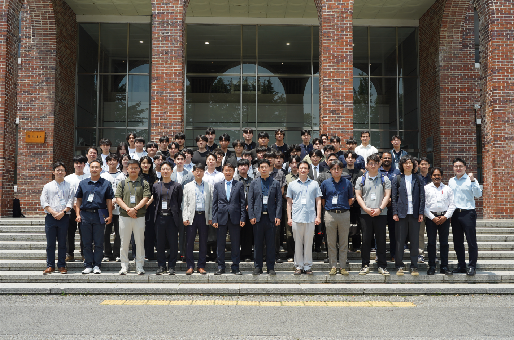
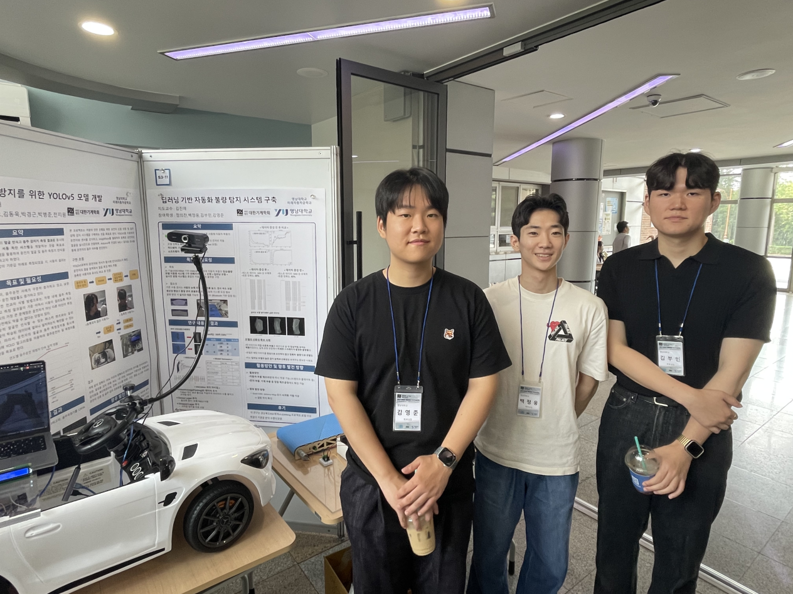
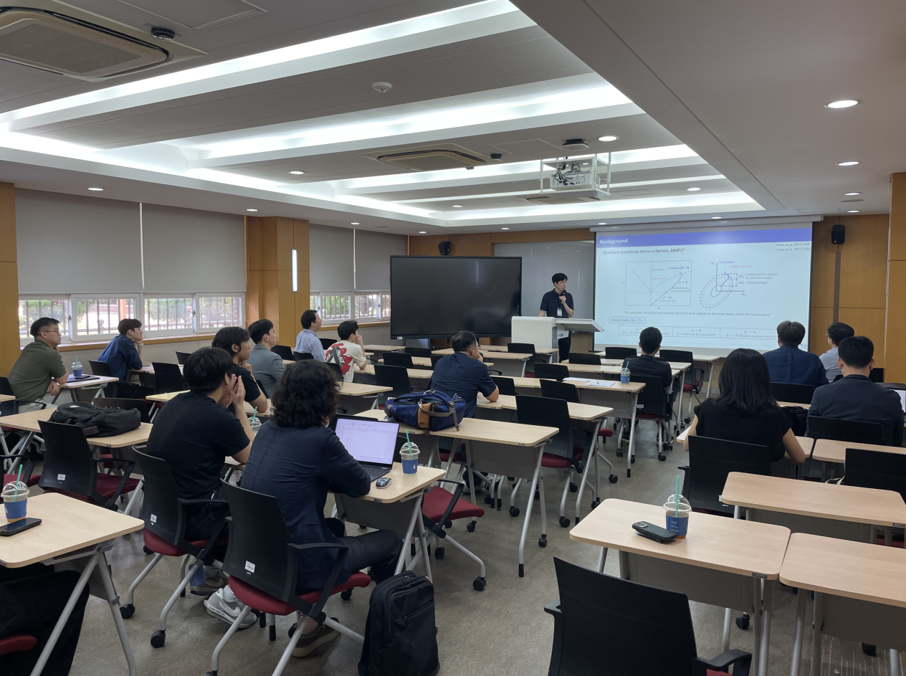
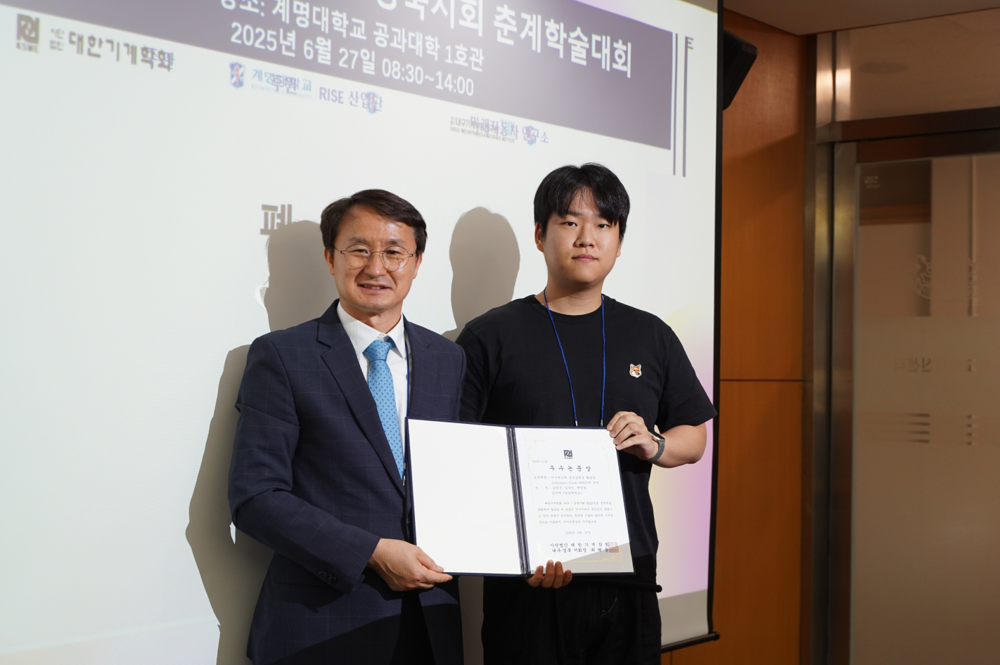
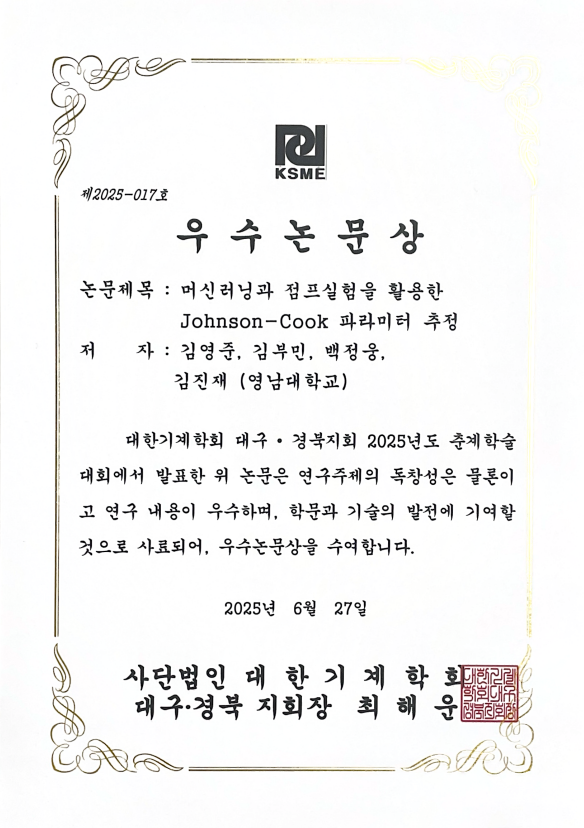
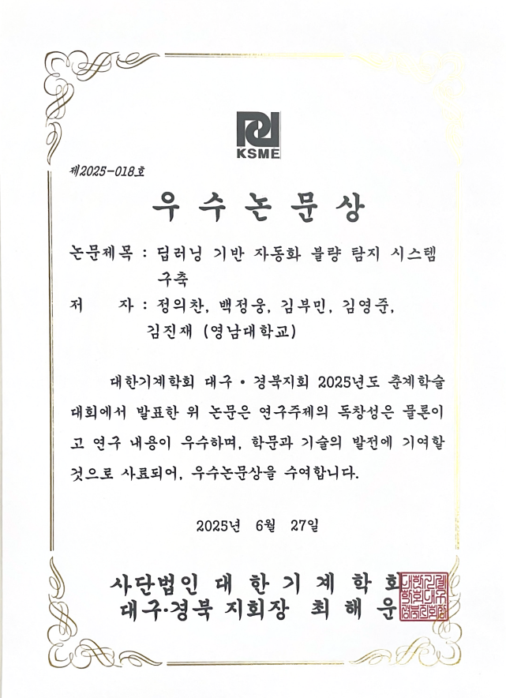

<!-- ====================  GALLERY  ==================== -->
<div class="gallery">

  <hr />
  <figure>
    <!-- 6장 → 슬라이드로 전환 -->
    
    
    
    
    
    
    <figcaption>2025/06/27 대한기계학회 대경지회 학술대회</figcaption>
  </figure>

  <hr />
  <figure>
    <!-- 1장 → 그대로 표시 -->
    
    <figcaption>2025/05/15 스승의 날</figcaption>
  </figure>

  <hr />
  <figure>
    
    <figcaption>2025/01/15 화신정공 견학</figcaption>
  </figure>

  <hr />
  <figure>
    <!-- 2장 → 슬라이드로 전환 -->
    
    
    <figcaption>2024/12/21 AI 캡스톤디자인 경진대회</figcaption>
  </figure>

  <hr />
  <figure>
    
    <figcaption>2024/08/06 현대자동차 남양연구소 견학</figcaption>
  </figure>

</div>

<!-- ====================  STYLE  ==================== -->
<style>
:root { --ratio: 4/3; }                     /* 1/1·16/9 등으로 변경 가능 */

.gallery              { max-width:1000px; margin:0 auto; }
hr                    { border:none; border-top:1px solid #ddd; margin:2rem 0; }

figure                { position:relative; margin:0; text-align:center; }
figure img            { width:100%; aspect-ratio:var(--ratio); object-fit:cover;
                        border-radius:4px; display:block; }  /* 기본 = 보임 */
figure img.hide       { display:none; }                      /* JS가 숨김용 */

figcaption            { margin-top:.75rem; font-size:1rem; font-weight:600; color:#333; }

/* 슬라이드용 화살표 */
.fig-nav {
  position:absolute; top:50%; transform:translateY(-50%);
  width:44px; height:44px; border:none; border-radius:50%;
  background:rgba(0,0,0,.45); color:#fff; font-size:1.8rem;
  cursor:pointer; line-height:1; z-index:5;
}
.fig-nav.prev { left:6px;  }
.fig-nav.next { right:6px; }
.fig-nav:hover{ background:rgba(0,0,0,.6); }

@media(max-width:480px){ figcaption{font-size:.9rem;} }
</style>

<!-- ====================  SCRIPT  ==================== -->
<script>
document.addEventListener('DOMContentLoaded', () => {

  /* 모든 figure 순회 */
  document.querySelectorAll('.gallery figure').forEach(fig => {
    const imgs = [...fig.querySelectorAll('img')];
    if (imgs.length <= 1) return;                 // 1장은 그대로

    /* 슬라이드 세팅: 첫 장 빼고 숨김 */
    imgs.slice(1).forEach(img => img.classList.add('hide'));
    let idx = 0;

    /* 화살표 버튼 생성 */
    const makeBtn = (dir, symbol) => {
      const btn = document.createElement('button');
      btn.className = `fig-nav ${dir}`;
      btn.setAttribute('aria-label', dir);
      btn.textContent = symbol;
      fig.appendChild(btn);
      return btn;
    };
    const prev = makeBtn('prev', '‹');
    const next = makeBtn('next', '›');

    /* 이동 함수 */
    const show = newIdx => {
      imgs[idx].classList.add('hide');
      idx = (newIdx + imgs.length) % imgs.length;
      imgs[idx].classList.remove('hide');
    };

    prev.addEventListener('click', () => show(idx - 1));
    next.addEventListener('click', () => show(idx + 1));

    /* 터치 스와이프 */
    let startX = 0;
    fig.addEventListener('touchstart', e => startX = e.touches[0].clientX, {passive:true});
    fig.addEventListener('touchend', e => {
      const diff = e.changedTouches[0].clientX - startX;
      if (Math.abs(diff) > 50) show(diff > 0 ? idx - 1 : idx + 1);
    }, {passive:true});
  });

});
</script>
